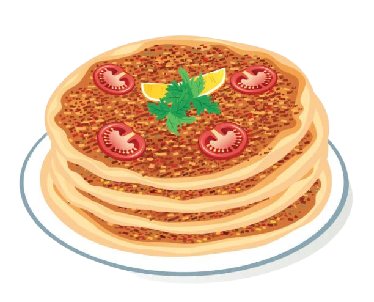

Lahmacun Recipe
Thin flatbread topped with minced meat, vegetables, and spices, often called “Turkish pizza.”
Ingredients
For the Dough:
- 2 1/4 teaspoons active dry yeast
- 1 cup warm water
- 1 teaspoon sugar
- 2 1/2 cups all-purpose flour
- 1 teaspoon salt
- 1 tablespoon olive oil
For the Meat Topping:
- 1 lb (450g) ground lamb or beef (or a mix of both)
- 1 medium onion, finely chopped
- 2 cloves garlic, minced
- 1 tablespoon tomato paste
- 1/2 cup tomatoes, finely chopped or pureed
- 1/4 cup red bell pepper, finely chopped
- 1/4 cup parsley, finely chopped
- 1 teaspoon paprika
- 1/2 teaspoon cumin
- 1/2 teaspoon red pepper flakes (adjust to heat preference)
- 1/2 teaspoon ground black pepper
- Salt, to taste
- 2 tablespoons olive oil
- 1 tablespoon lemon juice (optional, for tang)
For Serving:
- Fresh parsley, chopped
- Lemon wedges
- Sliced onions (optional)
- Sliced tomatoes (optional)
Preparation Time
- Prep time: 20 minutes
- Resting time: 1-1.5 hours (for dough)
- Cook time: 10-12 minutes per Lahmacun
- Total time: ~2 hours
Instructions
- Prepare the Dough:
- In a small bowl, dissolve the sugar and yeast in warm water. Let it sit for 5-10 minutes until the mixture becomes frothy.
- In a large bowl, combine the flour and salt. Add the olive oil and the yeast mixture, and stir to form a dough.
- Knead the dough on a lightly floured surface for about 5-7 minutes, until smooth and elastic.
- Place the dough in a lightly oiled bowl, cover it with a cloth, and let it rise for 1-1.5 hours, or until doubled in size.
- Prepare the Meat Topping:
- In a large bowl, combine the ground lamb or beef with the finely chopped onion, minced garlic, tomato paste, chopped tomatoes, red bell pepper, parsley, paprika, cumin, red pepper flakes, black pepper, and salt.
- Add the olive oil and lemon juice (if using), and mix everything well until evenly combined. The mixture should be spreadable but not too runny.
- Shape and Assemble the Lahmacun:
- Preheat the oven to 475°F (245°C), and if using a pizza stone, preheat it as well.
- Once the dough has risen, punch it down and divide it into 4-6 equal portions.
- Roll out each portion on a floured surface into a thin circle (about 8-10 inches in diameter).
- Spread a thin, even layer of the meat topping over each dough circle, pressing it down gently with the back of a spoon.
- Bake the Lahmacun:
- Transfer the prepared Lahmacun to the preheated oven (on a baking sheet or pizza stone) and bake for 10-12 minutes, or until the edges of the dough are crispy and the meat is cooked through.
- If you want the top to be slightly crispy, you can broil the Lahmacun for the last 1-2 minutes of baking.
- Serve:
- Once baked, remove from the oven and let cool for a minute.
- Garnish with fresh parsley, a squeeze of lemon juice, and sliced onions or tomatoes if desired.
- Serve immediately with additional lemon wedges on the side.
Lahmacun is often referred to as "Turkish pizza," but it's much lighter and more aromatic, with a beautifully spiced meat topping on a crispy thin crust. It’s commonly served with a squeeze of lemon and a side of fresh herbs. This dish is a perfect snack or light meal, and is sure to delight anyone who loves bold, savory flavors. Enjoy!